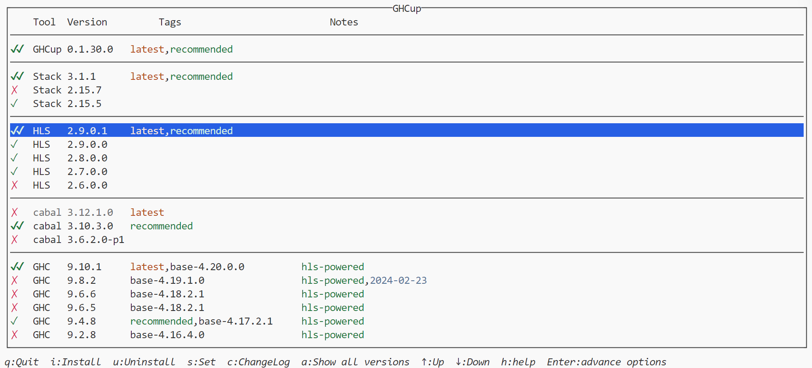
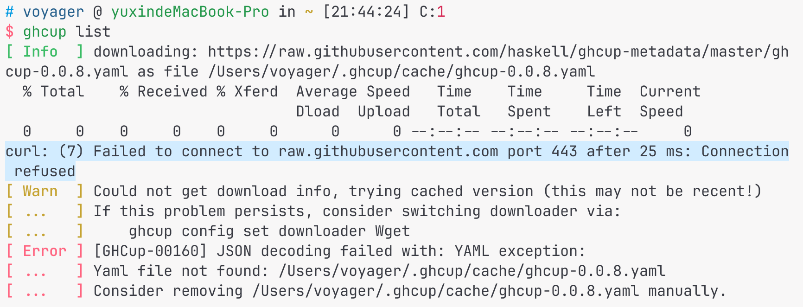

ghcup 修复
-
终端使用
ghcup直接被杀进程，输出大致如：ghcup terminated by SIGKILL -
使用 ghcup 官网上的命令通过 curl 重新安装，会得到一句红色的报错信息
"ghcup --metadata-fetching-mode=Strict upgrade" failed! -
不知道是不是因为太久没打开了，解决方式是清除缓存：
rm -rf ~/.ghcup/cache
ghcup 配置环境
ghcup tui下载和设置 HLS 和 ghc（以及 stack, cabal）版本，
-
ghc 版本：注意 ghc 的备注信息中需要有 hls-powered，不知道为什么我的 mac 上的版本是 9.4.7，正好没有 hls 支持（9.8.4是有 hls 支持的），当时下载的时机这么刚好吗。
-
HLS 版本：VSCode 的 Haskell 插件会要求 HLS 是最新的版本，所以就直接下最新的版本吧，VSCode 弹出提示" Haskell 插件需要 2.9.0.1 的 HLS，是否下载"，这里的下载比较慢，而且看不到进度，所以可以直接在终端的 ghcup 下载，然后回到VSC（重启？反正我重启了），插件就可以正常使用了。
-
HLS 无法正常工作也可以尝试通过
ghcup tui下载并切换 HLS 的版本。
一个网络问题
在第一步中修复 ghcup 之后，使用 ghcup 会遇到这样的报错：
根据提示执行：ghcup config set downloader Wget，再次使用 ghcup，得到差不多一样的报错：
关于 yaml：尝试过最后一行的 removing …yaml，结果为本机中确实不存在这个文件，所以不是这里的问题。
解决方式：复制 clash 的终端代理命令，就不会报这个错了，同时下载速度得到了极大提升。